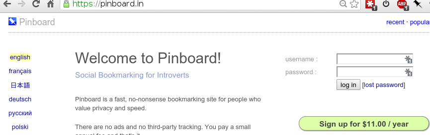
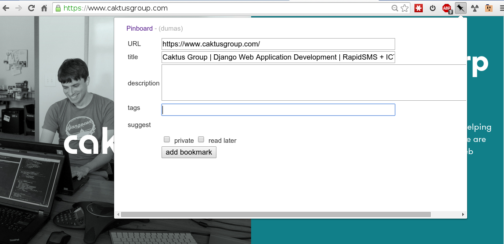
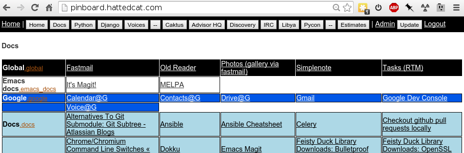

Pinboard
Social Bookmarking for Introverts
Dan Poirier
The Pinboard Site
https://pinboard.in

Stores your bookmarks
- Link
- Title
- Description
- Tags
- When you saved it
The Business Model
- $11/year
- Just pay for what you get - no ads, no tracking, no selling of
user information to cover costs.
- Maciej Cegłowski is the founder, owner, and sole employee.
- The site has been profitable since it was launched in 2009.
- See Tarsnap for another useful service with a similar business model.
What happens if the guy who runs Pinboard gets hit by a bus?
The bus is likely to be fine. They don't go very fast and are designed with passenger safety in mind.
(quoted from the Pinboard site)
Adding Bookmarks as you browse
Using the browser extension or bookmarklet

Adding Bookmarks Automatically
- Twitter: each tweet you send or favorite
- Instapaper, Readability, Pocket: each page you add to these services
- Email: Send an email to create a bookmark
Import Bookmarks from other Services
You can import your existing bookmarks from Delicious, Google Bookmarks, Safari, Firefox, Diigo, and most other online services that use the standard Netscape-style export format. You can also import from Instapaper in CSV format.
Neat features
- Privacy: Each bookmark can be private or public, or you can make your
whole account private.
- Reading list: Flag bookmarks "unread"
- Tagging: bookmarks to make querying related bookmarks easier
More neat features
- Popular bookmarks: See what URLs are currently getting bookmarked the most
- Networking: See what your friends on Pinboard are bookmarking
ARCHIVING
- For $25 a year
- Pinboard saves a cached copy of almost every page you bookmark
- I love this because I can bookmark a useful blog post somewhere and
know that even if the blog goes away tomorrow, I'll still have that content
saved.
Full-text search
Paying for archiving also enables full-text search across all your
archived content.
Otherwise, search covers just titles, descriptions, and tags,
which is still quite useful.
Pinboard has an API
It's modeled on Delicious's API
You can add bookmarks, query them, delete them, etc
My own front-end
Compact lists of bookmarks by certain tags

Wishes
- Sharing private bookmarks with specific other users
- A status-only twitter feed